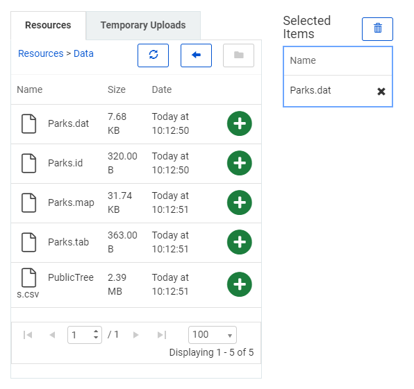

After completing this unit, you’ll be able to:
The final and preferred method of managing source data in FME Server is to use the system of tools called Resources.
"Resources" is an inbuilt file management system that allows data (and other files) to be published to an FME Server instance and used within all Server operations. Resources can be managed through the Resources page accessed from the main menu, under "Files and Connections."
The Resources page is where you can find all of the files that are uploaded to FME Server and also the files that are created by FME Server:

As you can see, the Resources filesystem is set up with many default folders in which files can be stored. Custom folders that you create can also be added to the filesystem, we'll do this in the next exercise. For datasets the most logical folder to use is the Data folder:

Above is the Data folder containing several files. Once a dataset has been checked, the Actions button is no longer greyed out and lists various actions that can be performed on the file or folder, such as duplicate, edit, upload, copy, delete, or move files (or folders).
Besides the web interface, there are other ways of getting data into the Resources filesystem.
FME Server Publishing Wizard
First is the FME Server publishing wizard in FME Workbench. If not otherwise specified at installation, the default method is to select the files and upload them to the same repository as the workspace. This is the method covered in previous units in this module. However, it is preferable to change the location to the Resources filesystem:

Server File System
Alternatively, FME Server resources actually exist on the Server machine's filesystem, meaning the data can be copied there directly. The default location (on a Windows operating system) is C:\ProgramData\Safe Software\FME Server\resources.
FME Server Resources Page
A final way to upload data to the Resource system is to click the New button on the main Resources page in FME Server. This button allows a connection to be made directly to a network-based resource via a UNC path or an Amazon S3 filesystem (for upload or download).

Some important limitations include that while network-based resources can be used within workspaces, Amazon S3 filesystems cannot. Additionally, the resources must be shared with the FME Server Service Account to use them with FME Server Services.
Using Resources data in a translation is simply a case of selecting it from that folder where prompted. All prompts for data allow the selection of files from a Resources folder.
For example, a user has uploaded a MapInfo TAB Parks dataset to the Resources data folder. Provided the source dataset is a published parameter, when the workspace is run the user is able to select data from the Resources folders, like so:

In fact, it's even possible to set the output data folder to be a Resources folder too:

Don't be concerned that the value doesn't show the full file path but rather a value contained within $(). When a folder is stored in Resources, it is assigned an FME Server User Parameter value, which is essentially a shortcut to the FME Server System Share file path.
There are several benefits to using the Resources filesystem as a data storage tool: